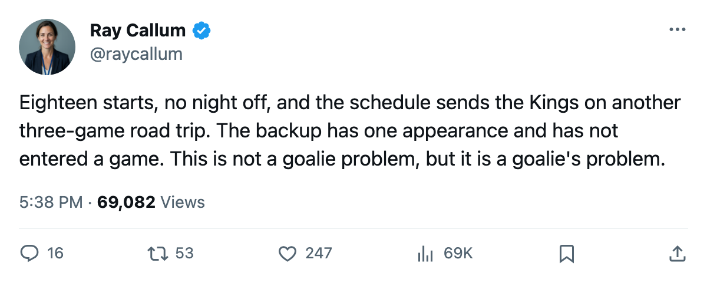
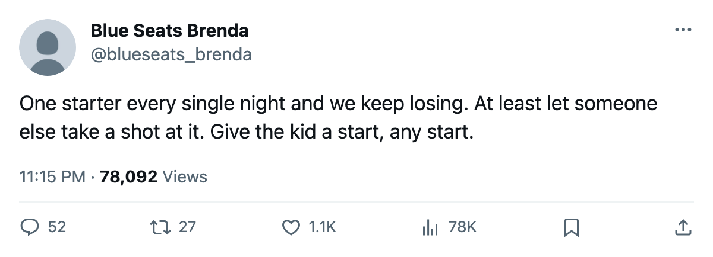

Goalie Watch: Cechmanek Has Started All 18, and the Kings Have Lost 5 Straight
Los Angeles has 2 wins on the road, 14 points, and the only goaltender in the league who has not surrendered a single start.
 Ray CallumSenior correspondent · Home Ice Network
Ray CallumSenior correspondent · Home Ice Network
 Roman Cechmanek90 has started all 18
Roman Cechmanek90 has started all 18  Los Angeles Kings games this season. He is one of two goaltenders in the league with a 100 percent share of club starts. The other is
Los Angeles Kings games this season. He is one of two goaltenders in the league with a 100 percent share of club starts. The other is  Nikolai Khabibulin87 at
Nikolai Khabibulin87 at  Tampa Bay Lightning, also 18 of 18. Tampa Bay sits 7-4-5 with 23 points and 1 day lost to injury across 6 spells all season. Los Angeles is 3-9-4 with 14 points, on a 5-game losing streak, and has lost 9 injury spells and 35 days. The gap between those two 100 percent goaltenders is 9 points, and Los Angeles opens a three-game road trip Sunday.
Tampa Bay Lightning, also 18 of 18. Tampa Bay sits 7-4-5 with 23 points and 1 day lost to injury across 6 spells all season. Los Angeles is 3-9-4 with 14 points, on a 5-game losing streak, and has lost 9 injury spells and 35 days. The gap between those two 100 percent goaltenders is 9 points, and Los Angeles opens a three-game road trip Sunday.
Cristobal Huet80 carries 1 appearance at 6 percent of team games. He has dressed and has not entered a contest. The Kings are 2-10 on the road, the most road losses of any club in the league, and 3-3 at home.
| Club | Road | Road losses |
|---|---|---|
| LA | 2-10 | 10 |
| PHX | 3-9 | 9 |
| ATL | 1-8 | 8 |
| FLA | 2-8 | 8 |
| WSH | 4-8 | 8 |
| ANA | 4-8 | 8 |
Los Angeles visits San Jose on November 21, Dallas on November 23, and Anaheim on November 27.  San Jose Sharks has lost only 2 days to injury all season, the fewest in the league.
San Jose Sharks has lost only 2 days to injury all season, the fewest in the league.  Evgeni Nabokov87 has started 14 of San Jose Sharks's 16 games at 88 percent.
Evgeni Nabokov87 has started 14 of San Jose Sharks's 16 games at 88 percent.  Dallas Stars is 11-4-3, 1st in the Pacific, and has won 7 of 12 on the road.
Dallas Stars is 11-4-3, 1st in the Pacific, and has won 7 of 12 on the road.  Mighty Ducks of Anaheim is 5-10-1, 4-8 away, and beat Atlanta 3-2 on November 17.
Mighty Ducks of Anaheim is 5-10-1, 4-8 away, and beat Atlanta 3-2 on November 17.
This desk covered  Johan Hedberg85 and
Johan Hedberg85 and  Pittsburgh Penguins on November 13, when Pittsburgh sat 7-4-0 and Hedberg had started all 14 games. The Penguins visited
Pittsburgh Penguins on November 13, when Pittsburgh sat 7-4-0 and Hedberg had started all 14 games. The Penguins visited  Montreal Canadiens on November 18 and lost 3-2. Hedberg's workload is 16 appearances at 94 percent across 17 team games. Cechmanek carries 18 with no relief.
Montreal Canadiens on November 18 and lost 3-2. Hedberg's workload is 16 appearances at 94 percent across 17 team games. Cechmanek carries 18 with no relief.
The Kings have allowed 48 goals and scored 37, a minus-11 differential that ranks 13th among the 15 clubs in the Western Conference. Anaheim sits 12th at minus-8 and 1 point ahead. Los Angeles has no home date in the week ahead, and no backup who has entered a game.

